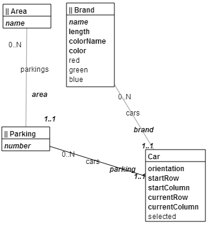

A game in Dart with a model based on the Rush Hour game. The goal is to exit the red car from the parking, by moving the selected car with a click before of after the selected car.
 The model is designed with Magic Boxes. The model code is generated by dartling. The app is one of examples in dartling, which is maintained at GitHub.